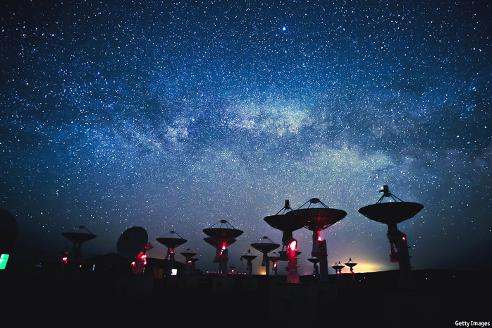

2021-02-10T13:26:22+00:00
Music in space
太空中的音乐
太空中的音樂
We are the world
天下一家
天下一家
A project aims to beam a musical message to other planets—and back to this one
一个项目想把一则音乐信息发送给其他星球——也传回给我们自己这颗
一個項目想把一則音樂信息發送給其他星球——也傳回給我們自己這顆

IN THE CASCADE mountains of northern California, a cluster of 42 radio telescopes points towards the stars, scanning for signs of life. The Search for Extraterrestrial Intelligence (SETI) Institute has been listening for a signal here and elsewhere since it was founded in 1984. In that time it has scoured only a minuscule fraction of space, equivalent to a glass of water in all the world’s oceans. But Jill Tarter, its co-founder, is undaunted. A renowned astrophyisicst—and the model for Jodie Foster’s character in the alien-encounter film “Contact”—Ms Tarter says the programme’s aim is not just to communicate with remote civilisations. It is also to remind humanity of its own modest, fragile place in the cosmos. Which is why, for the first time, SETI is cocking its ear towards Earth.
在加州北部的喀斯喀特山脉，42台射电望远镜组成的阵列指向星空，搜寻生命的迹象。自1984年成立以来，搜寻地外文明（SETI）研究院一直在这里和其他地方监听某种信号。当时它只搜索了太空的极小一部分，对浩瀚宇宙来说只是沧海一粟。但它的联合创始人吉尔·塔尔特（Jill Tarter）并不气馁。她是一位著名的天体物理学家，也是讲述与外星人邂逅的影片《超时空接触》（Contact）中朱迪·福斯特所饰角色的原型。她说，该项目并不仅仅是为了与遥远的文明交流，也是要提醒人类自己在宇宙中的位置有多平凡和脆弱。这也是为什么SETI现在第一次对地球竖起了耳朵。
在加州北部的喀斯喀特山脈，42台射電望遠鏡組成的陣列指向星空，搜尋生命的跡象。自1984年成立以來，搜尋地外文明（SETI）研究院一直在這裡和其他地方監聽某種信號。當時它只搜索了太空的極小一部分，對浩瀚宇宙來說只是滄海一粟。但它的聯合創始人吉爾·塔爾特（Jill Tarter）並不氣餒。她是一位著名的天體物理學家，也是講述與外星人邂逅的影片《超時空接觸》（Contact）中朱迪·福斯特所飾角色的原型。她說，該項目並不僅僅是為了與遙遠的文明交流，也是要提醒人類自己在宇宙中的位置有多平凡和脆弱。這也是為什麼SETI現在第一次對地球豎起了耳朵。
It is looking for the same thing on this planet that it routinely seeks from others: a signal that can be beamed into space to represent the species. Felipe Pérez Santiago, a Mexican musician and composer—and artist in residence at the institute—has an idea of what might work. Since song, like the human voice, is common to all languages and nations, he and Ms Tarter have devised the “Earthling Project”: a call to people everywhere to upload snippets of song that he plans to meld into a collective human chorus. An initial composition will be launched into space this summer, inscribed on a virtually indestructible disk alongside Wikipedia and the Rosetta Project, a sampling of 1,500 human languages. Future plans and dreams include an eventual dispatch to Mars.
该项目在地球上寻觅的东西和它惯常从其他星球上寻觅的一样：一个可以发射到太空、代表本星球生命物种的信号。墨西哥音乐家兼作曲家、同时也是SETI驻院艺术家的费利佩·佩雷斯·圣地亚哥（Felipe Pérez Santiago）有个想法或许可行。歌曲和人类的声音一样，是所有语言和民族共有的，因此，他和塔尔特构想出了一个“地球人计划”（Earthling Project）：号召世界各地的人们上传歌曲片段。他计划将这些片段融合成一首全人类的大合唱。首个作品将与维基百科和汇集了1500种人类语言样本的罗塞塔项目（Rosetta Project）一道，刻录在一个几乎坚不可摧的光盘上，于今年夏天发送到太空。未来的计划和梦想包括把这些信息最终发送到火星上去。
該項目在地球上尋覓的東西和它慣常從其他星球上尋覓的一樣：一個可以發射到太空、代表本星球生命物種的信號。墨西哥音樂家兼作曲家、同時也是SETI駐院藝術家的費利佩·佩雷斯·聖地亞哥（Felipe Pérez Santiago）有個想法或許可行。歌曲和人類的聲音一樣，是所有語言和民族共有的，因此，他和塔爾特構想出了一個“地球人計劃”（Earthling Project）：號召世界各地的人們上傳歌曲片段。他計劃將這些片段融合成一首全人類的大合唱。首個作品將與維基百科和彙集了1500種人類語言樣本的羅塞塔項目（Rosetta Project）一道，刻錄在一個幾乎堅不可摧的光盤上，於今年夏天發送到太空。未來的計劃和夢想包括把這些信息最終發送到火星上去。
Some composers, most famously Gustav Holst, have tried to capture the grandeur of space in sound. And human music has been sent to the heavens, notably on two Voyager probes that were launched in 1977 and are now more than 11bn miles from Earth. Distant beings can in theory already enjoy Peruvian panpipes, a Navajo chant, Bach, Beethoven and more. But no previous offering, and perhaps no composition undertaken anywhere, has tried to encompass the entire variety of human song.
已有一些作曲家试着用声音来表达宇宙的壮美，最著名的就是古斯塔夫·霍尔斯特（Gustav Holst）。而人类的乐声也已被送上云霄，最突出的就是1977年发射的两个“旅行者”探测器搭载的乐曲，现在它们已距离地球超过110亿英里。理论上，遥远的生命已经可以欣赏到秘鲁的排箫、纳瓦霍人的吟唱、巴赫和贝多芬的作品等等。但是，先前送上天的任何作品，或是地球上任何已有的创作，都不曾尝试把所有种类的人类歌曲都囊括在内。
已有一些作曲家試着用聲音來表達宇宙的壯美，最著名的就是古斯塔夫·霍爾斯特（Gustav Holst）。而人類的樂聲也已被送上雲霄，最突出的就是1977年發射的兩個“旅行者”探測器搭載的樂曲，現在它們已距離地球超過110億英里。理論上，遙遠的生命已經可以欣賞到秘魯的排簫、納瓦霍人的吟唱、巴赫和貝多芬的作品等等。但是，先前送上天的任何作品，或是地球上任何已有的創作，都不曾嘗試把所有種類的人類歌曲都囊括在內。
If anyone is equipped for this galactic challenge, it is Mr Santiago. He wrote his first ditty at the age of four, trained in Mexico City and then studied for five years at Rotterdam’s conservatory. There he was exposed to “Turkish, Indian, Caribbean music, everything from tango to gamelan to flamenco”. The maestro has since worked in Paris, Munich, Barcelona and Amsterdam, composing for choirs, films and ensembles of all kinds, including the Kronos Quartet and Harlem Dance Theatre. His back catalogue is exuberant, combining the clarity of classical technique with an energy he attributes to the rock bands he enjoyed in his youth.
如果有谁能胜任这项天大的挑战，那就非圣地亚哥莫属了。他四岁时写下了第一首曲子，在墨西哥城接受了训练，后来又在鹿特丹的音乐学院学习了五年。在那里，他接触了“土耳其、印度、加勒比音乐，从探戈到甘美兰再到弗拉门戈，什么都体验过了。”这位艺术大师先后在巴黎、慕尼黑、巴塞罗纳和阿姆斯特丹工作，为合唱团、电影和包括克罗那斯四重奏（Kronos Quartet）和哈林舞蹈剧院（Harlem Dance Theatre）在内的各种表演团体作曲。他创作成果丰硕，既具古典音乐技巧的明晰，又富有能量——他将后者归功于自己年轻时爱听的摇滚乐队。
如果有誰能勝任這項天大的挑戰，那就非聖地亞哥莫屬了。他四歲時寫下了第一首曲子，在墨西哥城接受了訓練，後來又在鹿特丹的音樂學院學習了五年。在那裡，他接觸了“土耳其、印度、加勒比音樂，從探戈到甘美蘭再到弗拉門戈，什麼都體驗過了。”這位藝術大師先後在巴黎、慕尼黑、巴塞羅納和阿姆斯特丹工作，為合唱團、電影和包括克羅那斯四重奏（Kronos Quartet）和哈林舞蹈劇院（Harlem Dance Theatre）在內的各種表演團體作曲。他創作成果豐碩，既具古典音樂技巧的明晰，又富有能量——他將後者歸功於自己年輕時愛聽的搖滾樂隊。
The first piece he produces for SETI will probably resemble a “wall of sound”, the composer says, incorporating as many as 10,000 unaccompanied voices. But later he proposes to craft an “earthling symphony”, a piece that will doubtless reflect his peripatetic background and eclectic passions. As thrilling as it may seem to send his work into space, Mr Santiago says he is just as excited about bringing together contributors from around the globe.
这位作曲家说，他为SETI创作的第一首曲子很可能会像一堵“音墙”，融合了多达一万条无伴奏声音。但后来他提议创作一曲“地球人交响乐”。这首曲子无疑会体现他云游四方的经历和不拘一格的音乐趣味。尽管把自己的作品送上太空看上去可能挺令人激动，但圣地亚哥说，能把五湖四海的人聚集起来为这个项目出力，一样让他兴奋。
這位作曲家說，他為SETI創作的第一首曲子很可能會像一堵“音牆”，融合了多達一萬條無伴奏聲音。但後來他提議創作一曲“地球人交響樂”。這首曲子無疑會體現他雲遊四方的經歷和不拘一格的音樂趣味。儘管把自己的作品送上太空看上去可能挺令人激動，但聖地亞哥說，能把五湖四海的人聚集起來為這個項目出力，一樣讓他興奮。
For the music is intended to be not just a message to the universe, but a mirror—a chance, as Ms Tarter has put it, to say “See, we’re all the same.” Mr Santiago raises his hands and his eyebrows as he summarises the goal: “Can we unite humanity with 30 seconds of singing?”
这是因为这段音乐不仅仅是要传递给宇宙的信息，而是一面镜子——正如塔尔特所言，是一个向人类传达“看吧，我们都一样”的机会。圣地亚哥手舞足蹈、眉飞色舞地总结了项目的目标：“我们能不能用30秒的歌唱让人类团结起来呢？”
這是因為這段音樂不僅僅是要傳遞給宇宙的信息，而是一面鏡子——正如塔爾特所言，是一個向人類傳達“看吧，我們都一樣”的機會。聖地亞哥手舞足蹈、眉飛色舞地總結了項目的目標：“我們能不能用30秒的歌唱讓人類團結起來呢？”
Greetings, earthlings
你们好，地球人
你們好，地球人
Some elemental melodies endure for centuries: lullabies, mourning chants, songs of love or celebration, age-old tunes that lighten toil or praise a god. Like those giant Californian dishes, the project’s app stands ready to receive all these, and whatever else earthlings anywhere choose to contribute. Unlike other recordings sent into space, says Mr Santiago, “everyone’s invited. You don’t have to be one of the main composers of our history like Beethoven, just someone singing in their shower.” Download the app, warble up to three songs of 30 seconds each, and your voice will be dispatched into the firmament.
一些基本的旋律历经千百年经久不衰：摇篮曲、哀歌、情歌或庆典歌曲、舒缓辛劳或赞美神灵的古老曲调。就像加州那些接收信号的超级望远镜一样，“地球人计划”的应用对所有这些音乐来者不拒，除此之外也欢迎任何地方的地球人的任何其他贡献。圣地亚哥说，与其他送入太空的录音不同，这一次“人人都受邀。不需要是贝多芬那样的人类历史上的大作曲家，在淋浴时哼哼的人也行。”下载该应用，引吭高歌最多三首曲目，每首30秒，你的声音就将被送入苍穹。
一些基本的旋律歷經千百年經久不衰：搖籃曲、哀歌、情歌或慶典歌曲、舒緩辛勞或讚美神靈的古老曲調。就像加州那些接收信號的超級望遠鏡一樣，“地球人計劃”的應用對所有這些音樂來者不拒，除此之外也歡迎任何地方的地球人的任何其他貢獻。聖地亞哥說，與其他送入太空的錄音不同，這一次“人人都受邀。不需要是貝多芬那樣的人類歷史上的大作曲家，在淋浴時哼哼的人也行。”下載該應用，引吭高歌最多三首曲目，每首30秒，你的聲音就將被送入蒼穹。
Mr Santiago pledges to use every submission. The ultimate plan is to throw open the whole database for musicians anywhere to sample. Understanding that all earthlings share a common planet “is crucial for our long future,” Ms Tarter says. “We face challenges that have to be solved by co-operating across the globe.” In a small but symbolic way, the Earthling Project is meant to set an example.
圣地亚哥保证，提交的素材全部都会用上。最终的计划是开放整个数据库，任何地方的音乐家都可以来采样。全体地球人共享同一颗星球，了解这一点“对我们长远的未来至关重要”，塔尔特说。“我们面临的挑战必须通过全球合作才可解决。”地球人计划意欲用一个不算宏伟但具象征性的方式做个榜样。
聖地亞哥保證，提交的素材全部都會用上。最終的計劃是開放整個數據庫，任何地方的音樂家都可以來採樣。全體地球人共享同一顆星球，了解這一點“對我們長遠的未來至關重要”，塔爾特說。“我們面臨的挑戰必須通過全球合作才可解決。”地球人計劃意欲用一個不算宏偉但具象徵性的方式做個榜樣。
It is helping to build bridges in another way, too. Astronomers and biologists, like artists, use imagination to conceive of new things, formulating questions, taking risks, experimenting and collaborating across borders. But often the worlds of art and science seem disconnected. The artists’ programme at SETI encourages co-operation between disciplines—resulting in artwork that gives tangible shape to abstract data. The first participant, Charles Lindsay, investigated interspecies communication through the song of humpback whales; another, Scott Kildall, created a virtual-reality tour of all the known exoplanets. Rachel Sussman presented an image of the cosmic background radiation generated by the Big Bang—“the baby picture of the universe”—as a sand mandala.
该项目也有助于以另外一种方式搭建桥梁。跟艺术家一样，天文学家和生物学家也运用想象力构思新事物、阐述问题、冒险、开展实验和跨国合作。但艺术界和科学界似乎总是脱节的。SETI的驻院艺术家项目鼓励跨学科合作，由此创造出了赋予抽象数据具体形态的艺术作品。第一个参与进来的查尔斯·林赛（Charles Lindsay）通过座头鲸的鲸歌研究种间交流；另一名参与者斯科特·基尔达尔（Scott Kildall）设计了一趟观览所有已知系外行星的虚拟现实之旅；雷切尔·苏斯曼（Rachel Sussman）以一幅坛城沙画展示了大爆炸产生的宇宙背景辐射景象——相当于“宇宙还是个宝宝时的照片”。
該項目也有助於以另外一種方式搭建橋樑。跟藝術家一樣，天文學家和生物學家也運用想象力構思新事物、闡述問題、冒險、開展實驗和跨國合作。但藝術界和科學界似乎總是脫節的。SETI的駐院藝術家項目鼓勵跨學科合作，由此創造出了賦予抽象數據具體形態的藝術作品。第一個參與進來的查爾斯·林賽（Charles Lindsay）通過座頭鯨的鯨歌研究種間交流；另一名參與者斯科特·基爾達爾（Scott Kildall）設計了一趟觀覽所有已知系外行星的虛擬現實之旅；雷切爾·蘇斯曼（Rachel Sussman）以一幅壇城沙畫展示了大爆炸產生的宇宙背景輻射景象——相當於“宇宙還是個寶寶時的照片”。
As Mr Santiago notes, “nothing has united humanity like this pandemic.” At a dark time, he and the institute aim to foster a more uplifting sense of communion. “If we can send this unified message,” he says, “our mission is accomplished.”■
正如圣地亚哥所指出的，“从来没有什么像这场疫情一样把人类团结在一起。”在黑暗的日子里，他和SETI力图促成一种更能振奋人心的交融之感。“如果能把这个彰显天下一家的信息传递出去，”他说，“ 那我们的使命就完成了。”
正如聖地亞哥所指出的，“從來沒有什麼像這場疫情一樣把人類團結在一起。”在黑暗的日子裡，他和SETI力圖促成一種更能振奮人心的交融之感。“如果能把這個彰顯天下一家的信息傳遞出去，”他說，“ 那我們的使命就完成了。”